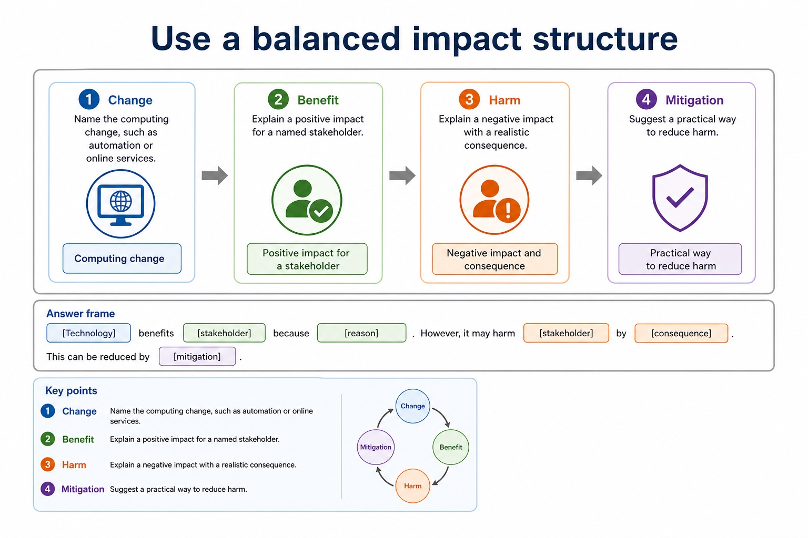
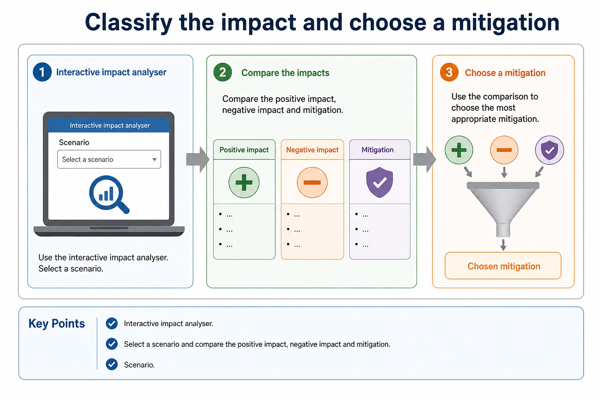
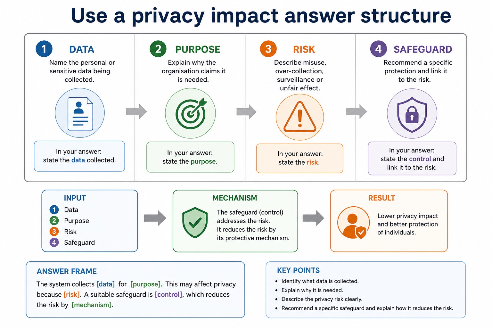

Cambridge AS9618 | Paper 1 | Section 7: Ethics and ownership
Ethical decisions and their consequences
Flexible-depth lesson
S7.03 | Learn from the diagrams, test the method, then choose the practice you need.
Choose a Quick, Full or Deep route
Quick route
Use the diagnostic, learning objectives, first worked example and foundation question. Stop once the learner can explain the central distinction accurately.
Full route
Use every knowledge-point material set, the worked method, the terminology check and all questions.
Deep route
Add the prerequisite refresher, ask learners to connect the concept checklist, discuss the labelled extension and complete a transfer question without a model answer.
Part 1 | optional depth
Prerequisite knowledge and quick diagnostic
Recall S7.01 before starting this lesson.
Give one accurate definition or method step before continuing. If it is missing, revisit only that prerequisite.
Open optional prerequisite refresher
Version 2 requires both the need for professional ethics and its purpose; evidence must connect responsible professional decisions to public interest, competence and accountability.
Show understanding of the need for and purpose of ethics as a computing professional.
Part 2 | knowledge-point material sets
Learn each point through visuals
Follow the map, the three-part explanation and the concrete cue. Open precise wording only after the idea is clear.
Open the concept checklist and choose what to teach
situation
ethical
unethical
impact
01
S7.03 · decision
Ethical and unethical choices
Concept map
situationethicalunethicalimpact
See how it works
EvidenceEvidence must identify stakeholders and explain impacts of both ethical and unethical action
ChoiceIn a situation, judge whether action is ethical or unethical and explain stakeholder impacts of both choices
ReasonVersion 2 requires scenario judgement plus consequences
Map a decision to stakeholders, benefits and concerns
Open text transcript
Interactive stakeholder mapper
Select a scenario and compare the ethical tension. The aim is not to memorise one answer; it is to see the pattern.
Scenario
03
Process · 3 of 4
Use a balanced impact structure

Open text transcript
1. Change Name the computing change, such as automation or online services.
2. Benefit Explain a positive impact for a named stakeholder.
3. Harm Explain a negative impact with a realistic consequence.
4. Mitigation Suggest a practical way to reduce harm.
Answer frame:
[Technology] benefits [stakeholder] because [reason]. However, it may harm [stakeholder] by [consequence]. This can be reduced by [mitigation].
04
Comparison · 4 of 4
Classify the impact and choose a mitigation

Open text transcript
Interactive impact analyser
Select a scenario and compare the positive impact, negative impact and mitigation.
Scenario
Open precise syllabus wording
Explain the need to act ethically and the impact of acting ethically or unethically for a given situation.
Version 2 requires scenario judgement plus consequences. Evidence must identify stakeholders and explain impacts of both ethical and unethical action; a label or generic list is insufficient.
Supporting diagram library
1 / 7
01
Diagram · 1 of 7
Ethics is about responsible decision-making
Open text transcript
Ethics Principles about right and wrong behaviour, responsibility and fairness.
Stakeholder A person or group affected by a decision, directly or indirectly.
Responsibility The duty to consider consequences and act appropriately.
Proportionality The response should be no more intrusive or harmful than needed for the aim.
02
Diagram · 2 of 7
Use a balanced evaluation structure

Open text transcript
1. Context State the decision and the computing system involved.
2. For Explain a benefit for a named stakeholder, with scenario detail.
3. Against Explain a harm or right that may be affected.
4. Judgement Give a justified conclusion with conditions or safeguards.
Answer frame:
Although [benefit] helps [stakeholder], [harm] may affect [stakeholder]. Therefore, the decision is justified only if [condition/safeguard].
03
Diagram · 3 of 7
Most ethical issues are trade-offs, not slogans
Open text transcript
Privacy vs safety Monitoring may protect users, but can intrude into personal behaviour.
Efficiency vs fairness Automation may save time, but may disadvantage some groups if data or rules are biased.
Convenience vs consent Personalisation can help users, but data collection should be clear and justified.
Innovation vs responsibility New systems can create benefits, but developers still need to consider harms.
04
Diagram · 4 of 7
Common contrasts that stop vague answers
Open text transcript
Contrast
Difference
Common error
Privacy vs security
Privacy concerns control of personal data; security protects systems/data from threats.
Encryption alone does not answer every privacy ethics question.
Copyright vs licence
Copyright protects the work; a licence grants permission under conditions.
benefits, harms, rights, responsibilities and justified judgement
Privacy/data protection
personal data, monitoring, surveillance, retention, access, consent
data collected, purpose, risk, safeguard and transparency
06
Diagram · 6 of 7
What Cambridge-style marking usually rewards
Open text transcript
Precise term privacy, copyright, e-waste, digital divide, open source, stakeholder.
Scenario link Explain how the issue affects the school, company, user or worker in the question.
Consequence Say what happens: exclusion, legal risk, privacy loss, job displacement, reduced emissions.
Balance Include both benefit and concern before final judgement in evaluate/discuss questions.
07
Diagram · 7 of 7
The five-part evaluation answer
Open text transcript
1. Context Use the actual scenario, not a memorised opening sentence.
2. Benefit Explain one advantage for a named stakeholder.
3. Concern Explain one risk, harm or right that may be affected.
4. Safeguard Suggest a condition, limit, policy or technical measure.
5. Judgement Reach a supported conclusion using "if", "provided that" or "unless".
Answer frame:
Although [benefit] helps [stakeholder], [concern] may harm [stakeholder]. Therefore, [decision] is justified only if [condition/safeguard].
Apply the idea
Worked method
01Unsafe release pressure
02A developer is told to hide failed safety tests so a medical system can launch on time.
03Concealing the evidence would be unethical because patients could be harmed and trust would be damaged.
04The developer acts ethically by documenting the risk, refusing to falsify the record and escalating through BCS/IEEE-style professional channels.
05This may delay release and cost money, but protects patients, supports accountability and allows the defect to be corrected.
Open precise terminology and exam facts
Version 2 requires scenario judgement plus consequences. Evidence must identify stakeholders and explain impacts of both ethical and unethical action; a label or generic list is insufficient.
Professional ethics provides principles for deciding how a computing professional should act when technical choices can affect clients, users, colleagues or wider society. Its purpose is to protect the public interest, support competent and honest work, and make professionals accountable for foreseeable consequences rather than treating legal compliance or a manager's instruction as the whole decision.
Joining a professional ethical body is important because membership gives a practitioner an explicit code of conduct, current professional guidance, continuing professional development and a community through which standards and misconduct can be challenged. The British Computer Society (BCS) and the Institute of Electrical and Electronics Engineers (IEEE) are the two named syllabus examples. Their codes promote public interest, competence, integrity, privacy and accountability; a code guides judgement but does not replace law.
For a given situation, decide whether an action is ethical or unethical by identifying the decision, affected stakeholders, benefits, harms, rights and responsibilities. Then explain the impact of acting ethically and the impact of acting unethically. A defensible conclusion applies evidence, proportionality and safeguards; it is not a one-sided list or an unsupported personal opinion.
Professional ethics has a purpose: computing professionals must protect public interest, work competently and remain accountable for consequences. Joining a professional ethical body such as the British Computer Society (BCS) or the Institute of Electrical and Electronics Engineers (IEEE) provides codes of conduct, guidance, continuing professional development and a community that supports standards. In a situation, judge whether action is ethical or unethical and explain stakeholder impacts of both choices.
Artificial intelligence (AI) applications include classification, recommendation, prediction and autonomous control. Every AI evaluation should identify the application or decision mechanism and trace social, economic and environmental impacts before reaching a contextual judgement with realistic mitigations.
To evaluate an AI application, balance its social, economic and environmental impacts and reach a context-linked judgement.
The required licence categories include FSF and OSI open-source licences, shareware and commercial software. A justified licence choice links its permissions, restrictions and cost to the stated situation.
Beyond syllabus / 延伸知识（不要求背诵）
professional decisions are often reviewed against law, organisational policy, public interest and a published code of conduct.
Part 3 | select by learner need
Practice by question type
applyrecallfoundation2 marks
Question 1. What must follow an ethical or unethical label?
Show answer and marking guidance
Answer: An explanation of stakeholder consequences, evidence and a justified action or safeguard.
Marking guidance: Award one mark for each distinct, technically accurate point or method step.
Common error: For the command word apply, perform that exact action; do not replace it with an unrelated fact.
applyrecallapplication2 marks
Question 2. What is the purpose of professional ethics in computing?
Show answer and marking guidance
Answer: To guide competent, responsible and accountable decisions that protect clients, users and the public interest.
Marking guidance: Award one mark for each distinct, technically accurate point or method step.
Common error: Do not repeat the same point in different words; each mark needs a separate idea or method step.
explainexplaintransfer3 marks
Question 3. Explain how ethical decisions and their consequences would be applied in a suitable computing context.
Show answer and marking guidance
Answer: Professional ethics provides principles for deciding how a computing professional should act when technical choices can affect clients, users, colleagues or wider society. Its purpose is to protect the public interest, support competent and honest work, and make professionals accountable for foreseeable consequences rather than treating legal compliance or a manager's instruction as the whole decision. Joining a professional ethical body is important because membership gives a practitioner an explicit code of conduct, current professional guidance, continuing professional development and a community through which standards and misconduct can be challenged. The British Computer Society (BCS) and the Institute of Electrical and Electronics Engineers (IEEE) are the two named syllabus examples. Their codes promote public interest, competence, integrity, privacy and accountability; a code guides judgement but does not replace law. For a given situation, decide whether an action is ethical or unethical by identifying the decision, affected stakeholders, benefits, harms, rights and responsibilities. Then explain the impact of acting ethically and the impact of acting unethically. A defensible conclusion applies evidence, proportionality and safeguards; it is not a one-sided list or an unsupported personal opinion.
Marking guidance: Each mark needs a relevant point linked to the stated context.
Common error: Do not copy the worked example unchanged; transfer the method and check it against the new context.
Related past-paper indexes
Reference
Marks
Command word
Question type
9618/13/W/25 Q7(a)
2
describe
explain
9618/12/W/24 Q5(a)
4
explain
explain
9618/12/W/24 Q5(i)
3
describe
explain
9618/12/W/24 Q5(ii)
2
describe
explain
Index only: Cambridge question and mark-scheme wording is not reproduced on this public course page.
Part 4 | close when ready
Summary and exam reminders
Summary
Define ethical decisions and their consequences with the exact technical vocabulary expected by the syllabus.
Use the lesson method on a fresh context and show the intermediate decision, representation or calculation.
Match the shape of the answer to the command word and the available marks.
Check the final answer against the scenario instead of repeating a memorised sentence.
Common error to correct
Students often write personal opinions only. Correction: ethics answers need stakeholders, evidence and balanced judgement.
Exam technique
Follow the command word: state gives a fact; explain links a cause to a consequence; compare covers both sides.
Match the number of independent points or method steps to the available marks.
For ethical decisions and their consequences, use the exact technical term before applying it to the scenario.